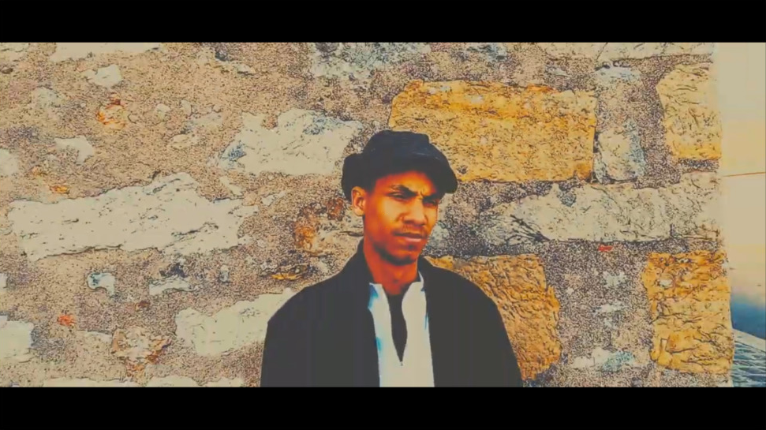
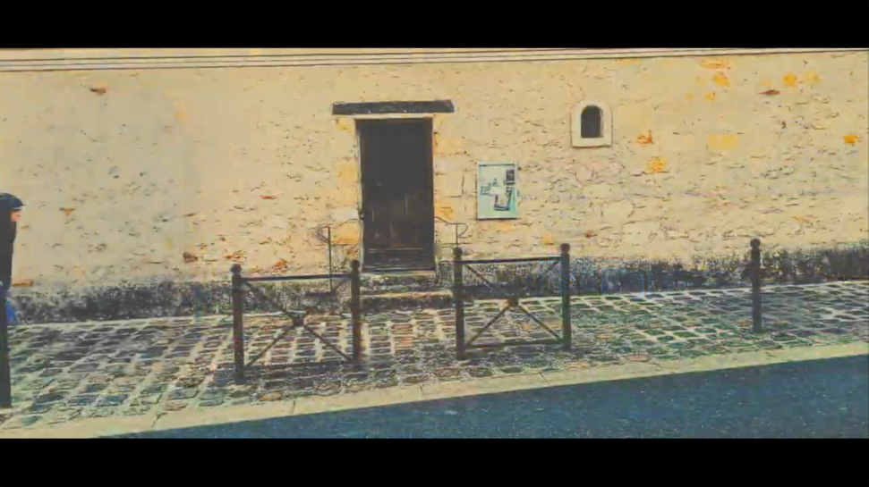
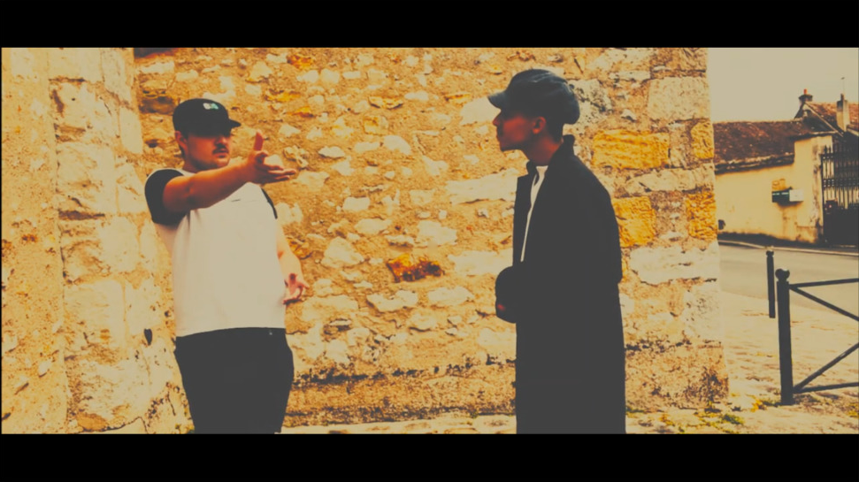
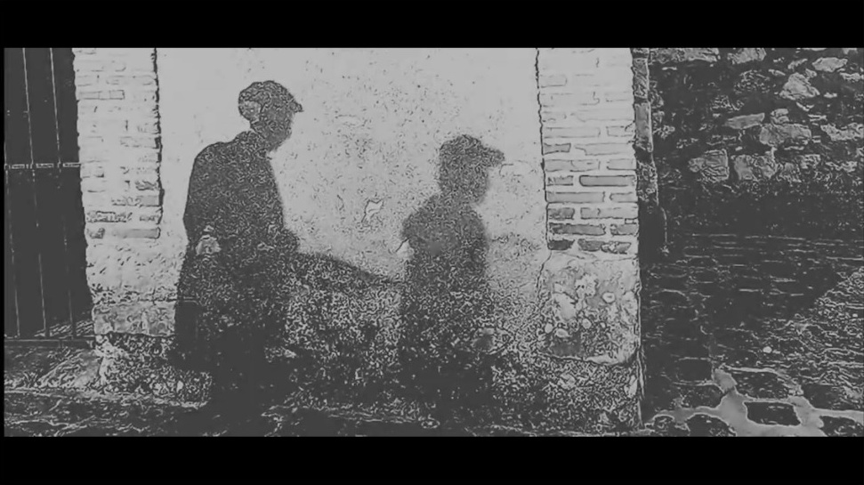
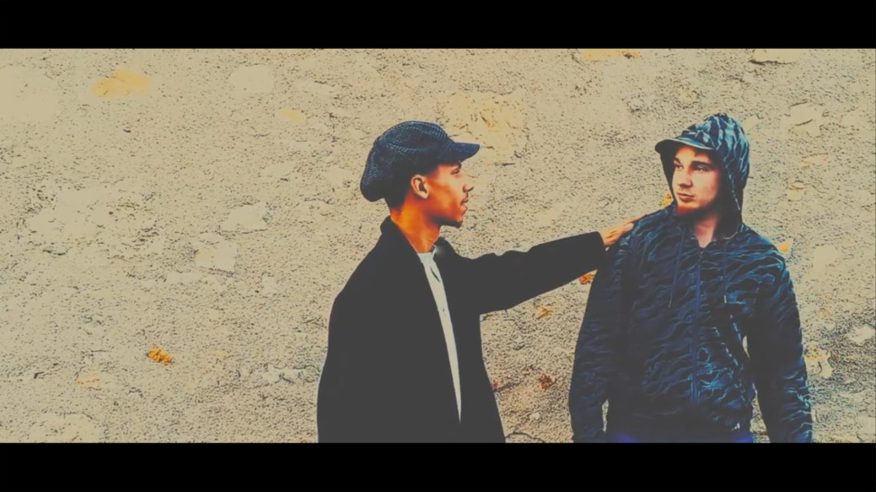
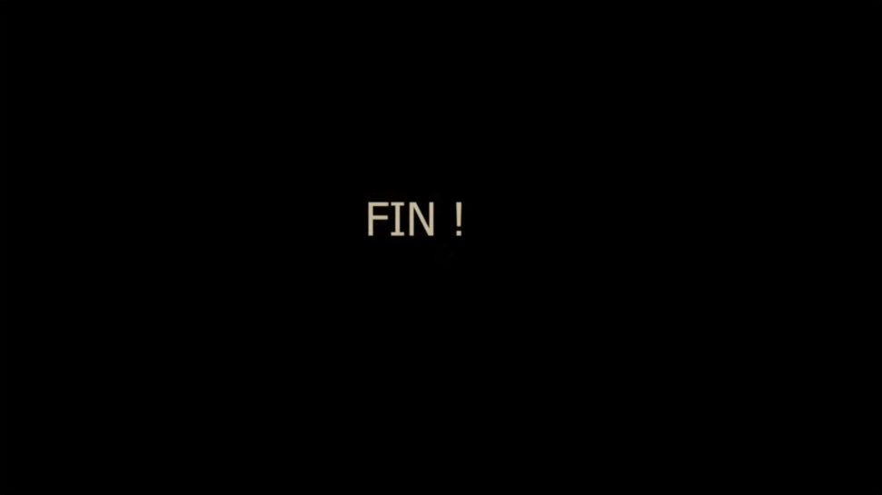

Captures de la vidéo

Capture 1 • Portrait Acteur

Capture 2 • Ruelle Pavée

Capture 3 • Face-à-Face

Capture 4 • Jeu d'Ombres

Capture 5 • Rencontre

Capture 6 • Titre de Fin
Why · 2025
Clip Vidéo Musical
Le Brief : Réaliser un clip vidéo musical d'expression libre calé de bout en bout sur l'intégralité d'un morceau de 3 minutes, en s'appuyant sur une pré-production rigoureuse (storyboard et découpage technique).
La Réalisation :
- Écriture du dossier de production technique et planification des plans sur le rythme de la chanson.
- Montage du clip vidéo et synchronisation fine de l'image sur les temps forts de la musique (Time Remapping).
- Travail d'étalonnage en clair-obscur et application d'effets de flou cinétique sous Premiere Pro.
Focus projet : Écriture du découpage technique, étalonnage cinématique et synchronisation audio-visuelle via Time Remapping.